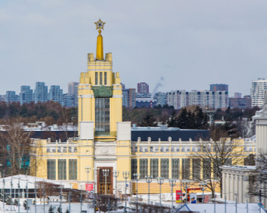

|  |
Политех
Этот павильон — третий по высоте на всей территории ВДНХ. До настоящего времени сохранилось стрельчатое остекление, а внутри павильона видны витражи из протравленного стекла, на которых изображены овощи и злаки средней полосы России. После завершения работ по реставрации здесь будет организована музейно-выставочная деятельность.
Павильон был построен в 1939 году, а в 1954 году реконструирован с сохранением элементов прежней композиции, архитектор — Д. Чечулин.
В 1959 году был переименован в павильон «Московская область», а с 1963 года — в павильон №59 «Зерно».
|